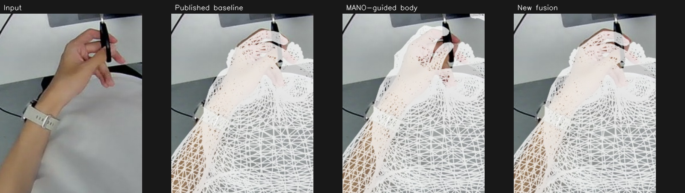
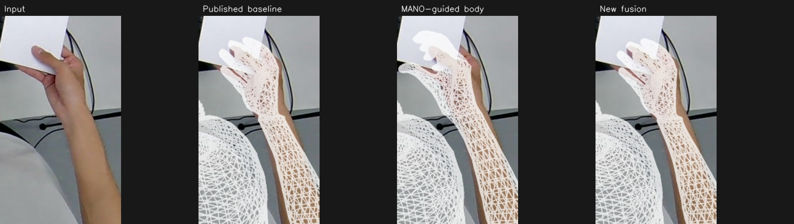
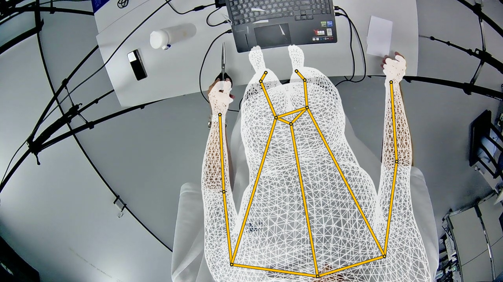
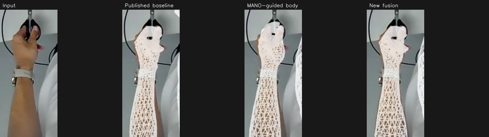
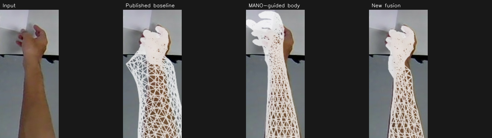

sample_03_cam3 · 48.531 s
未通过表面验收，仅作诊断；不建议替换原结果。
身体自动点 RMSE：原发布融合基底 27.27 → 新版 26.56 px；最终手部自动点 RMSE：5.53 → 6.63 px。
固定 MANO 腕口局部候选全部通过：False；局部非相邻三角形交叉检查通过：False。不通过时该侧保留原有有界接缝算法，不标为几何合格。


sample_04 大鼓包明显减轻，腕口仍有局部收窄；sample_03 未通过表面验收。原发布流程和页面保持不变。
基于原 GitHub session-hand6 流程继续优化，原流程保持不变。所有误差参考自动目标，不是人工真值；请同时检查轮廓和几何诊断。
原发布页面 · 方法与指标报告 · 单文件离线版 · 结果下载
恢复 checkpoint：b5c966263cae4e4add5d6de0c1e5f7c14d7583f0
未通过表面验收，仅作诊断；不建议替换原结果。
身体自动点 RMSE：原发布融合基底 27.27 → 新版 26.56 px；最终手部自动点 RMSE：5.53 → 6.63 px。
固定 MANO 腕口局部候选全部通过：False；局部非相邻三角形交叉检查通过：False。不通过时该侧保留原有有界接缝算法，不标为几何合格。


黄色为保存的 SMPL-X 身体关节点投影，采用原 cam3 标定；仅增加骨架显示，身体参数和融合网格不变。

身体自动点 RMSE：原发布融合基底 60.35 → 新版 31.84 px；最终手部自动点 RMSE：4.42 → 3.97 px。
固定 MANO 腕口局部候选全部通过：True；局部非相邻三角形交叉检查通过：True。不通过时该侧保留原有有界接缝算法，不标为几何合格。

